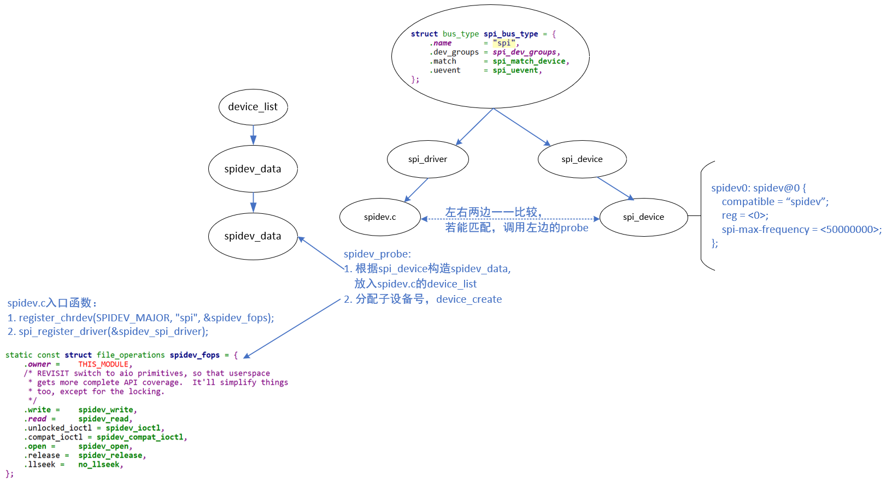
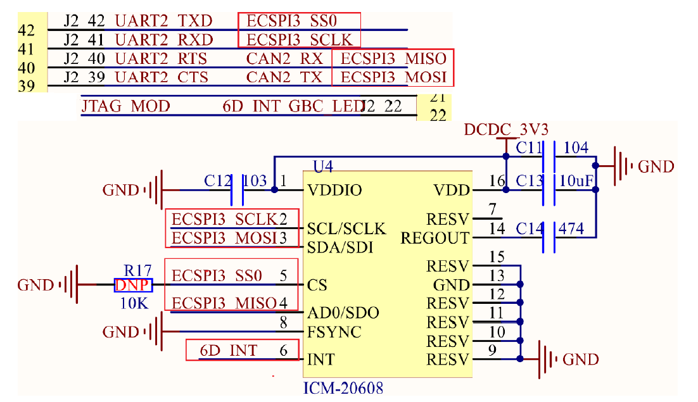
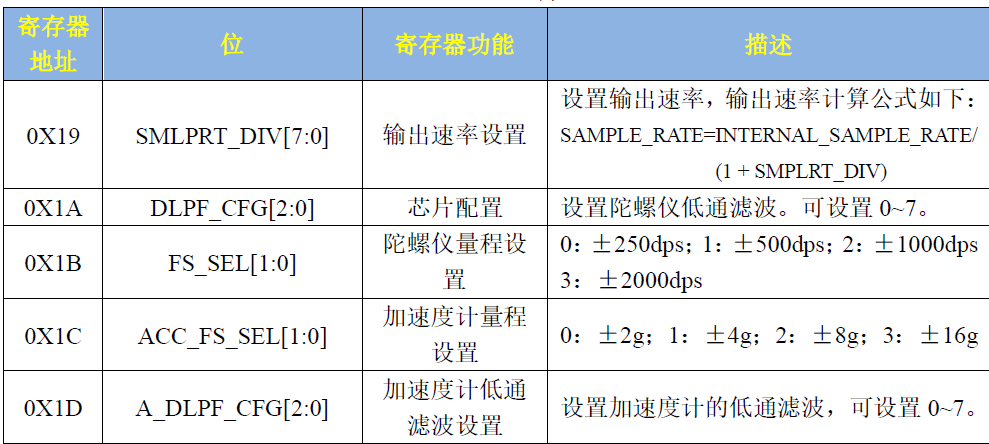
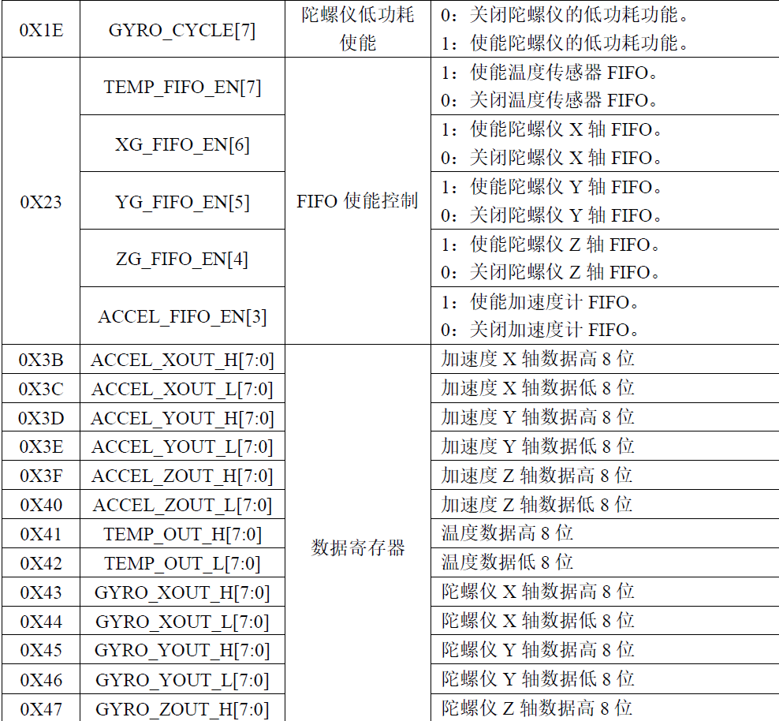
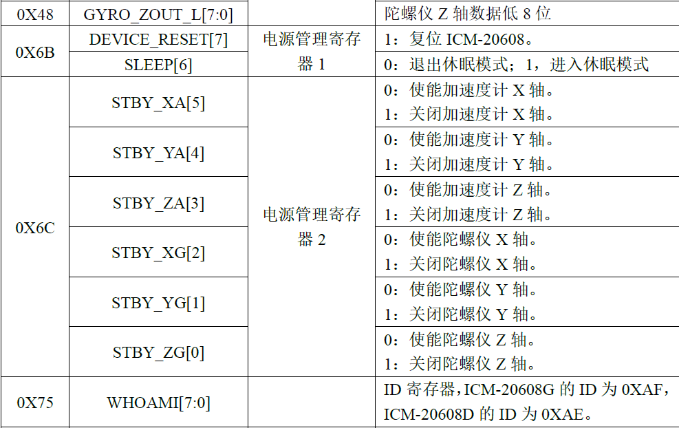

驱动开发-SPI
SPI原理
SPI（Serial Peripheral Interface）是一种高速、全双工、同步的串行通信协议。它广泛用于连接微控制器与外部设备，如传感器、存储器等。
SPI特点
| 特性维度 | SPI (Serial Peripheral Interface) |
|---|---|
| 信号线数量 | 至少4根线：MOSI（主出从入）、MISO（主入从出）、SCLK（时钟）、CS（片选，每个从机独享一根） |
| 拓扑结构 | 点对点型：主设备与每个从设备都有独立的片选线连接。 |
| 通信模式 | 全双工：发送和接收可以同时进行。 |
| 数据传输 | 无应答机制：主设备产生时钟，从设备被动跟随，无法确认数据是否被成功接收。 |
| 速度 | 速度非常高（通常50Mbps以上），几乎只受限于硬件性能。 |
| 软件复杂度 | 软件简单：本质上是简单的移位寄存器，主要靠硬件实现。 |
| 硬件复杂度 | 硬件复杂：线多，尤其是从设备多时，需要大量片选线，占用大量IO口。 |
| 主要应用场景 | 高速器件（如我的项目中的ICM20608陀螺仪）、Flash存储器、显示屏、ADC/DAC等。 |
| 四种工作模式 | 通过串行时钟极性(CPOL)和**相位(**CPHA)的搭配来得到四种工作模式 |
SPI通信通常需要4根基础信号线：
- SCLK（Serial Clock）：时钟信号，由主设备产生，用于同步数据交换。
- MOSI（Master Out Slave In）：主设备数据输出，从设备数据输入。
- MISO（Master In Slave Out）：主设备数据输入，从设备数据输出。
- CS/SS（Chip Select/Slave Select）：片选信号，由主设备控制，低电平有效，用于选择特定从设备。
SPI通信流程
一次基本的SPI通信流程通常遵循以下步骤：
- 主设备将目标从设备的CS线拉低（激活）。
- 主设备产生时钟信号SCLK。
- 数据在SCLK的每个时钟周期内通过MOSI和MISO线同时传输（全双工）。
- 数据传输完成后，主设备停止时钟并将CS线拉高（释放）。
数据的传输：
- 数据传输是基于移位寄存器的
- 主设备和从设备各有一个8位移位寄存器
- 每个时钟周期，两个寄存器同时移位一位
- 8个时钟周期后，主从设备完成一个字节的交换
- 通常MSB（最高有效位）先传输，但也有LSB先传输的设备
SPI工作模式
SPI有4种工作模式，由时钟极性（CPOL） 和时钟相位（CPHA） 两个参数组合决定
- CPOL (时钟极性) - 决定时钟空闲状态
CPOL = 0：时钟信号 SCLK 在空闲状态时为低电平。CPOL = 1：时钟信号 SCLK 在空闲状态时为高电平。
- CPHA (时钟相位) - 决定数据采样时刻
CPHA = 0：数据在第一个时钟边沿（即从空闲状态跳变到有效状态的第一个边沿）被采样（读取）。数据必须在时钟边沿到来之前就保持稳定。CPHA = 1：数据在第二个时钟边沿（即返回到空闲状态的边沿）被采样（读取）。数据可以在第一个边沿时发生变化。
| 模式 | CPOL | CPHA | 时钟空闲状态 | 数据采样时刻 |
|---|---|---|---|---|
| 0 | 0 | 0 | 低电平 | 第一个边沿（上升沿） |
| 1 | 0 | 1 | 低电平 | 第二个边沿（下降沿） |
| 2 | 1 | 0 | 高电平 | 第一个边沿（下降沿） |
| 3 | 1 | 1 | 高电平 | 第二个边沿（上升沿） |
- 根据从设备的要求选择，不同设备可能支持不同的模式
- 查阅从设备的数据手册，确定其支持的SPI模式
SPI驱动开发
SPI控制器
Linux中使用spi_master结构体描述SPI控制器，里面最重要的成员就是transfer函数指针：
1 | struct spi_master { |
transfer函数，和i2c_algorithm中的master_xfer函数一样，控制器数据传输函数。SPI主机端最终会通过transfer函数与SPI设备进行通信，因此对于SPI主机控制器的驱动编写者而言transfer函数是需要实现的
SPI的主机驱动的工作
申请spi_master，然后初始化spi_master，最后向Linux内核注册spi_master。
申请与释放
struct spi_master *spi_alloc_master(struct device *dev,unsigned size)**master：**要释放的spi_master。 **返回值：**无。1
2
3
4
5
6
7
**dev：**设备，一般是platform_device中的dev成员变量。
**size：**私有数据大小，可以通过spi_master_get_devdata函数获取到这些私有数据。
**返回值：**申请到的spi_master。
- ```c
void spi_master_put(struct spi_master *master)
注册与注销
int spi_register_master(struct spi_master *master)**master：**要注销的spi_master。 **返回值：**无。1
2
3
4
5
6
**master：**要注册的spi_master。
**返回值：**0，成功；负值，失败。
- ```c
void spi_unregister_master(struct spi_master *master)
SPI设备
struct spi_device
1 | struct spi_device { |
| 参数名 (Parameter Name) | 说明 (Description) | 备注 (Notes) |
|---|---|---|
| max_speed_hz | 该设备能支持的 SPI 时钟频率最大值。 | 主设备必须配置为不超过此值的频率。 |
| chip_select | 该设备在其 SPI 主机控制器（spi_master）下的片选索引号。 | 此索引号用于从主控制的 cs_gpios[] 数组中获取具体的GPIO引脚号：cs_gpio = cs_gpios[spi_device.chip_select] |
| cs_gpio | (可选) 直接指定该设备片选引脚所使用的 GPIO 编号。 | 如果提供，通常会优先使用此值而非通过 chip_select 索引查找。 |
| bits_per_word | 每个基本的 SPI 传输单元包含的位数。 | 默认通常是8位。可以设置为其他值（如16位），并且可以大于32位，以支持DMA进行大批量连续传输。 |
mode 参数是一个位掩码，用于设置SPI通信的各种模式和行为。以下是其支持的标志：
| 模式标志 (Mode Flag) | 含义 (Meaning) | 备注 (Notes) |
|---|---|---|
| SPI_CPOL | 时钟极性 (Clock Polarity)。设置时钟信号在空闲时的状态。 |
|
| SPI_CPHA | 时钟相位 (Clock Phase)。设置数据采样的时刻。 |
|
| SPI_MODE_0 | 模式 0。 | SPI_CPOL = 0, SPI_CPHA = 0 |
| SPI_MODE_1 | 模式 1。 | SPI_CPOL = 0, SPI_CPHA = 1 |
| SPI_MODE_2 | 模式 2。 | SPI_CPOL = 1, SPI_CPHA = 0 |
| SPI_MODE_3 | 模式 3。 | SPI_CPOL = 1, SPI_CPHA = 1 |
| SPI_CS_HIGH | 片选信号高有效。 | 通常片选是低电平有效（CS引脚拉低表示选中）。设置此标志则表示片选为高电平有效。 |
| SPI_LSB_FIRST | 数据传输从最低位 (LSB) 开始。 | 标准SPI协议通常先传输最高位（MSB）。注意：很多SPI控制器硬件不支持此模式。 |
| SPI_3WIRE | 使用 3线制（半双工）。 | 输入（MISO）和输出（MOSI）数据线合并为一条（SISO）。 |
| SPI_LOOP | 回环测试模式。 | 控制器内部将输出（MOSI）与输入（MISO）短接，用于自检。 |
| SPI_NO_CS | 不使用片选信号。 | 适用于总线上只有一个从设备的情况，无需片选操作。 |
| SPI_READY | 支持从设备就绪信号。 | 从设备可以通过拉低某条信号线来通知主设备自己“未就绪”，主设备应等待。 |
| SPI_TX_DUAL | 发送时使用 2 条数据线。 | |
| SPI_TX_QUAD | 发送时使用 4 条数据线。 | 这些是SPI的扩展模式（Dual/Quad SPI），常用于高速SPI Flash等器件，以提升数据传输带宽。 |
| SPI_RX_DUAL | 接收时使用 2 条数据线。 | |
| SPI_RX_QUAD | 接收时使用 4 条数据线。 |
SPI设备树
SPI Master
1
2
3
4
5
6
7
8
9
10
11
12
13ecspi1: ecspi@02008000 {
compatible = "fsl,imx6ul-ecspi", "fsl,imx51-ecspi";
reg = <0x02008000 0x4000>;
interrupts = <GIC_SPI 31 IRQ_TYPE_LEVEL_HIGH>;
clocks = <&clks IMX6UL_CLK_ECSPI1>,
<&clks IMX6UL_CLK_ECSPI1>;
clock-names = "ipg", "per";
dmas = <&sdma 3 7 1>, <&sdma 4 7 2>;
dma-names = "rx", "tx";
status = "disabled";
};在设备树中，对于SPI Master，必须的属性如下：
- #address-cells：这个SPI Master下的SPI设备，需要多少个cell来表述它的片选引脚
- #size-cells：必须设置为0
- compatible：根据它找到SPI Master驱动
可选的属性如下：
- cs-gpios：SPI Master可以使用多个GPIO当做片选，可以在这个属性列出那些GPIO
- num-cs：片选引脚总数
SPI Device
1
2
3
4
5
6
7
8
9
10
11
12
13
14&ecspi3 {
fsl,spi-num-chipselects = <1>; /* 1个片选 */
cs-gpios = <&gpio1 20 GPIO_ACTIVE_LOW>; /* 片选引脚，软件片选！ */
pinctrl-names = "default";
pinctrl-0 = <&pinctrl_ecspi3>;
status = "okay";
/* 对应的SPI芯片子节点 */
spidev0: icm20608@0 { /* @后面的0表示次SPI芯片接到哪个硬件片选上 */
reg = <0>;
compatible = "kevin,icm20608";
spi-max-frequency = <8000000>; /* SPI时钟频率8MHz*/
};
};在SPI Master对应的设备树节点下，每一个子节点都对应一个SPI设备，这个SPI设备连接在该SPI Master下面。
这些子节点中，必选的属性如下：
- **compatible：**根据它找到SPI Device驱动
- **reg：**用来表示它使用哪个片选引脚
- **spi-max-frequency：**必选，该SPI设备支持的最大SPI时钟
可选的属性如下：
- **spi-cpol：**这是一个空属性(没有值)，表示CPOL为1，即平时SPI时钟为低电平
- **spi-cpha：**这是一个空属性(没有值)，表示CPHA为1)，即在时钟的第2个边沿采样数据
- **spi-cs-high：**这是一个空属性(没有值)，表示片选引脚高电平有效
- **spi-3wire：**这是一个空属性(没有值)，表示使用SPI 三线模式
SPI设备驱动
struct spi_driver
1 | struct spi_driver { |
spi_driver 和i2c_driver、platform_driver 基本一样，当SPI设备和驱动匹配成功以后probe 函数就会执行。
spi_driver 注册函数
1
int spi_register_driver(struct spi_driver *sdrv)
**sdrv：**要注册的spi_driver。
**返回值：**0，注册成功；赋值，注册失败。spi_driver 注销函数
1
void spi_unregister_driver(struct spi_driver *sdrv)
**sdrv：**要注销的spi_driver。
**返回值：**无。
SPI设备与驱动匹配
SPI设备和驱动的匹配过程是由SPI总线来完成的，SPI总线为spi_bus_type
1 | struct bus_type spi_bus_type = { |
匹配的函数为：
1 | static int spi_match_device(struct device *dev, struct device_driver *drv) |
spi_match_device 函数和i2c_match_device 函数对于设备和驱动的匹配过程基本一样
of_driver_match_device函数用于完成设备树设备和驱动匹配。比较SPI设备节点的compatible 属性和of_device_id 中的compatible 属性是否相等，如果相当的话就表示SPI设备和驱动匹配。spi_match_id函数用于传统的、无设备树的SPI 设备和驱动匹配过程。比较SPI设备名字和spi_device_id 的name 字段是否相等，相等的话就说明SPI 设备和驱动匹配。
SPI控制器驱动
spi-imx.c该驱动作为所有SPI设备驱动的基础，负责处理SPI总线的底层通信。SPI核心驱动提供了统一的接口，使得不同的SPI设备驱动可以方便地接入。
| 工作类别 | 具体描述 | 关键函数/操作 |
|---|---|---|
| 驱动初始化 | 向内核注册平台驱动，并在匹配到设备时执行探测函数。 | platform_driver_register, spi_imx_probe |
| 主机控制器注册 | 申请并设置 spi_master 结构体，包括片选数量、模式支持、回调函数等。 |
spi_alloc_master, 设置 master->bits_per_word_mask, master->num_chipselect, master->mode_bits 等 |
| 硬件资源申请 | 获取并映射 IO 内存空间、申请中断、配置 GPIO 片选引脚、使能时钟。 | platform_get_resource, devm_ioremap_resource, platform_get_irq, devm_request_irq, of_get_named_gpio |
| 回调函数设置 | 实现并设置一系列操作 SPI 控制器的回调函数，用于配置、数据传输等。 | spi_imx_setup, spi_imx_transfer, spi_imx_prepare_message 等 |
| 传输队列管理 | 启动传输队列，处理上层提交的 SPI 消息。 | spi_bitbang_start |
SPI主机驱动器采用了platfom 驱动框架。当设备和驱动匹配成功以后spi_imx_probe 函数就会执行。
SPI设备数据收发处理流程
- 设 Transfer：初始化一个
spi_transfer结构体，填入发送缓冲区（tx_buf）、接收缓冲区（rx_buf）和传输长度（len）。 - 初始 Message：使用
spi_message_init()初始化一个spi_message。 - 挂载 Transfer：使用
spi_message_add_tail()将设置好的spi_transfer添加到spi_message的队列中。 - 同步传输：调用
spi_sync()函数。此函数会阻塞直到整个传输完成，此时数据已存在于rx_buf中。
transfer是单元，message是序列：transfer描述“做什么”（发什么，收什么），message描述“做的顺序和时机”（一系列动作在一个片选周期内完成）。
struct spi_transfer
1
2
3
4
5
6
7
8
9
10
11
12
13
14
15
16
17
18
19
20
21
22
23
24
25
26
27
28
29
30
31
32
33
34
35
36
37
38
39
40
41
42struct spi_transfer {
/* it's ok if tx_buf == rx_buf (right?)
* for MicroWire, one buffer must be null
* buffers must work with dma_*map_single() calls, unless
* spi_message.is_dma_mapped reports a pre-existing mapping
*/
const void *tx_buf;
void *rx_buf;
unsigned len;
dma_addr_t tx_dma;
dma_addr_t rx_dma;
struct sg_table tx_sg;
struct sg_table rx_sg;
unsigned cs_change:1;
unsigned tx_nbits:3;
unsigned rx_nbits:3;
u8 bits_per_word;
u16 delay_usecs;
struct spi_delay delay;
struct spi_delay cs_change_delay;
struct spi_delay word_delay;
u32 speed_hz;
u32 effective_speed_hz;
unsigned int ptp_sts_word_pre;
unsigned int ptp_sts_word_post;
struct ptp_system_timestamp *ptp_sts;
bool timestamped;
struct list_head transfer_list;
u16 error;
};- tx_buf：保存着要发送的数据。
- rx_buf：用于保存接收到的数据。
- len：是要进行传输的数据长度，SPI是全双工通信，因此在一次通信中发送和接收的字节数都是一样的，所以spi_transfer中也就没有发送长度和接收长度之分。
struct spi_message
spi_transfer 需要组织成spi_message
1
2
3
4
5
6
7
8
9
10
11
12
13
14
15
16
17
18
19
20
21
22
23
24
25
26
27
28
29
30
31
32
33
34
35struct spi_message {
struct list_head transfers;
struct spi_device *spi;
unsigned is_dma_mapped:1;
/* REVISIT: we might want a flag affecting the behavior of the
* last transfer ... allowing things like "read 16 bit length L"
* immediately followed by "read L bytes". Basically imposing
* a specific message scheduling algorithm.
*
* Some controller drivers (message-at-a-time queue processing)
* could provide that as their default scheduling algorithm. But
* others (with multi-message pipelines) could need a flag to
* tell them about such special cases.
*/
/* completion is reported through a callback */
void (*complete)(void *context);
void *context;
unsigned frame_length;
unsigned actual_length;
int status;
/* for optional use by whatever driver currently owns the
* spi_message ... between calls to spi_async and then later
* complete(), that's the spi_controller controller driver.
*/
struct list_head queue;
void *state;
/* list of spi_res reources when the spi message is processed */
struct list_head resources;
};在使用spi_message之前需要对其进行初始化
1
void spi_message_init(struct spi_message *m)
**m：**要初始化的spi_message。
**返回值：**无。spi_message 初始化完成以后需要将spi_transfer添加到spi_message 队列中
1
void spi_message_add_tail(struct spi_transfer *t, struct spi_message *m)
**t：**要添加到队列中的spi_transfer。
**m：**spi_transfer 要加入的spi_message。
**返回值：**无。spi_message 准备好以后就可以进行数据传输了，数据传输分为同步传输和异步传输，
同步传输会阻塞的等待SPI 数据传输完成，同步传输函数为spi_sync
1
int spi_sync(struct spi_device *spi, struct spi_message *message)
**spi：**要进行数据传输的spi_device。
**message：**要传输的spi_message。
**返回值：**无。异步传输不会阻塞的等到SPI 数据传输完成，异步传输需要设置spi_message 中的complete成员变量，complete 是一个回调函数，当SPI 异步传输完成以后此函数就会被调用
1
int spi_async(struct spi_device *spi, struct spi_message *message)
**spi：**要进行数据传输的spi_device。
**message：**要传输的spi_message。
**返回值：**无。
因此SPI的收发为：
1 | /* SPI 多字节发送 */ |
集成之后就是：
1 | /* |
spidev
spidev接口是一个在用户空间与内核空间之间提供SPI通信能力的桥梁。它通过一组文件操作接口（如open、read、write、ioctl等）暴露给用户空间程序。当用户空间程序打开spidev设备文件时，内核会为该程序创建一个表示SPI设备的文件描述符。随后，程序可以使用write和read系统调用来发送和接收数据，使用ioctl系统调用来配置SPI通信的参数（如时钟频率、时钟极性、时钟相位等）。spidev接口简化了SPI通信的复杂性，使得开发者无需深入了解内核驱动开发即可实现SPI通信。

使用方法：
设备树里你需要的spi设备节点的compatible属性等于下列值，就会跟spidev驱动匹配：
- “rohm,dh2228fv”
- “lineartechnology,ltc2488”
- “spidev”
匹配之后，spidev.c的spidev_probe会被调用，它会：
- 分配一个spidev_data结构体，用来记录对于的spi_device
- spidev_data会被记录在一个链表里
- 分配一个次设备号，以后可以根据这个次设备号在链表里找到spidev_data
- device_create：这会生产一个设备节点
/dev/spidevB.D，B表示总线号，D表示它是这个SPI Master下第几个设备
以后，我们就可以通过/dev/spidevB.D来访问spidev驱动程序。
驱动
内核提供的测试程序：tools\spi\spidev_fdx.c
1 | spidev_fdx [-h] [-m N] [-r N] /dev/spidevB.D |
- -h: 打印用法
- -m N：先写1个字节0xaa，再读N个字节，**注意：**不是同时写同时读
- -r N：读N个字节
spidev.c通过file_operations向应用层提供接口：
单独的读/写函数：
1
2
3
4
5
6
7
8
9
10
11
12
13
14
15
16
17
18
19
20
21
22
23
24
25
26
27
28
29
30
31
32
33
34
35
36
37
38
39
40
41
42
43
44
45
46
47
48
49
50
51
52
53
54
55
/* Read-only message with current device setup */
static ssize_t
spidev_read(struct file *filp, char __user *buf, size_t count, loff_t *f_pos)
{
struct spidev_data *spidev;
ssize_t status;
/* chipselect only toggles at start or end of operation */
if (count > bufsiz)
return -EMSGSIZE;
spidev = filp->private_data;
mutex_lock(&spidev->buf_lock);
status = spidev_sync_read(spidev, count);
if (status > 0) {
unsigned long missing;
missing = copy_to_user(buf, spidev->rx_buffer, status);
if (missing == status)
status = -EFAULT;
else
status = status - missing;
}
mutex_unlock(&spidev->buf_lock);
return status;
}
/* Write-only message with current device setup */
static ssize_t
spidev_write(struct file *filp, const char __user *buf,
size_t count, loff_t *f_pos)
{
struct spidev_data *spidev;
ssize_t status;
unsigned long missing;
/* chipselect only toggles at start or end of operation */
if (count > bufsiz)
return -EMSGSIZE;
spidev = filp->private_data;
mutex_lock(&spidev->buf_lock);
missing = copy_from_user(spidev->tx_buffer, buf, count);
if (missing == 0)
status = spidev_sync_write(spidev, count);
else
status = -EFAULT;
mutex_unlock(&spidev->buf_lock);
return status;
}双工传输
1
2
3
4
5
6
7
8
9
10
11
12
13
14
15
16
17
18
19
20
21
22
23
24
25
26
27
28
29
30
31
32
33
34
35
36
37
38
39
40
41
42
43
44
45
46
47
48
49
50
51
52
53
54
55
56
57
58
59
60
61
62
63
64
65
66
67
68
69
70
71
72
73
74
75
76
77
78
79
80
81
82
83
84
85
86
87
88
89
90
91
92
93
94
95
96
97
98
99
100
101
102
103
104
105
106
107
108
109
110
111
112
113
114
115
116
117
118
119
120
121
122
123
124
125
126
127
128
129
130
131
132
133
134
135
136
137
138
139
140
141
142
143
144
145
146
147
148
149
150
151static long
spidev_ioctl(struct file *filp, unsigned int cmd, unsigned long arg)
{
int retval = 0;
struct spidev_data *spidev;
struct spi_device *spi;
u32 tmp;
unsigned n_ioc;
struct spi_ioc_transfer *ioc;
/* Check type and command number */
if (_IOC_TYPE(cmd) != SPI_IOC_MAGIC)
return -ENOTTY;
/* guard against device removal before, or while,
* we issue this ioctl.
*/
spidev = filp->private_data;
spin_lock_irq(&spidev->spi_lock);
spi = spi_dev_get(spidev->spi);
spin_unlock_irq(&spidev->spi_lock);
if (spi == NULL)
return -ESHUTDOWN;
/* use the buffer lock here for triple duty:
* - prevent I/O (from us) so calling spi_setup() is safe;
* - prevent concurrent SPI_IOC_WR_* from morphing
* data fields while SPI_IOC_RD_* reads them;
* - SPI_IOC_MESSAGE needs the buffer locked "normally".
*/
mutex_lock(&spidev->buf_lock);
switch (cmd) {
/* read requests */
case SPI_IOC_RD_MODE:
retval = put_user(spi->mode & SPI_MODE_MASK,
(__u8 __user *)arg);
break;
case SPI_IOC_RD_MODE32:
retval = put_user(spi->mode & SPI_MODE_MASK,
(__u32 __user *)arg);
break;
case SPI_IOC_RD_LSB_FIRST:
retval = put_user((spi->mode & SPI_LSB_FIRST) ? 1 : 0,
(__u8 __user *)arg);
break;
case SPI_IOC_RD_BITS_PER_WORD:
retval = put_user(spi->bits_per_word, (__u8 __user *)arg);
break;
case SPI_IOC_RD_MAX_SPEED_HZ:
retval = put_user(spidev->speed_hz, (__u32 __user *)arg);
break;
/* write requests */
case SPI_IOC_WR_MODE:
case SPI_IOC_WR_MODE32:
if (cmd == SPI_IOC_WR_MODE)
retval = get_user(tmp, (u8 __user *)arg);
else
retval = get_user(tmp, (u32 __user *)arg);
if (retval == 0) {
struct spi_controller *ctlr = spi->controller;
u32 save = spi->mode;
if (tmp & ~SPI_MODE_MASK) {
retval = -EINVAL;
break;
}
if (ctlr->use_gpio_descriptors && ctlr->cs_gpiods &&
ctlr->cs_gpiods[spi->chip_select])
tmp |= SPI_CS_HIGH;
tmp |= spi->mode & ~SPI_MODE_MASK;
spi->mode = (u16)tmp;
retval = spi_setup(spi);
if (retval < 0)
spi->mode = save;
else
dev_dbg(&spi->dev, "spi mode %x\n", tmp);
}
break;
case SPI_IOC_WR_LSB_FIRST:
retval = get_user(tmp, (__u8 __user *)arg);
if (retval == 0) {
u32 save = spi->mode;
if (tmp)
spi->mode |= SPI_LSB_FIRST;
else
spi->mode &= ~SPI_LSB_FIRST;
retval = spi_setup(spi);
if (retval < 0)
spi->mode = save;
else
dev_dbg(&spi->dev, "%csb first\n",
tmp ? 'l' : 'm');
}
break;
case SPI_IOC_WR_BITS_PER_WORD:
retval = get_user(tmp, (__u8 __user *)arg);
if (retval == 0) {
u8 save = spi->bits_per_word;
spi->bits_per_word = tmp;
retval = spi_setup(spi);
if (retval < 0)
spi->bits_per_word = save;
else
dev_dbg(&spi->dev, "%d bits per word\n", tmp);
}
break;
case SPI_IOC_WR_MAX_SPEED_HZ:
retval = get_user(tmp, (__u32 __user *)arg);
if (retval == 0) {
u32 save = spi->max_speed_hz;
spi->max_speed_hz = tmp;
retval = spi_setup(spi);
if (retval == 0) {
spidev->speed_hz = tmp;
dev_dbg(&spi->dev, "%d Hz (max)\n",
spidev->speed_hz);
}
spi->max_speed_hz = save;
}
break;
default:
/* segmented and/or full-duplex I/O request */
/* Check message and copy into scratch area */
ioc = spidev_get_ioc_message(cmd,
(struct spi_ioc_transfer __user *)arg, &n_ioc);
if (IS_ERR(ioc)) {
retval = PTR_ERR(ioc);
break;
}
if (!ioc)
break; /* n_ioc is also 0 */
/* translate to spi_message, execute */
retval = spidev_message(spidev, ioc, n_ioc);
kfree(ioc);
break;
}
mutex_unlock(&spidev->buf_lock);
spi_dev_put(spi);
return retval;
}
icm20608实验
ICM-20608
ICM-20608 是InvenSense 出品的一款6 轴MEMS 传感器，包括3 轴加速度和3 轴陀螺仪。
使用SPI 接口读写寄存器需要16 个时钟或者更多(如果读写操作包括多个字节的话)，第一个字节包含要读写的寄存器地址，寄存器地址最高位是读写标志位，如果是读的话寄存器地址最高位要为1，如果是写的话寄存器地址最高位要为0，剩下的7 位才是实际的寄存器地址，寄存器地址后面跟着的就是读写的数据。
   在icm20608 驱动中将陀螺仪和加速度计的测量范围全部设置到了最大，分别为±2000 和±16g。因此，在计算实际值的时候陀螺仪使用16.4，加速度计使用2048。
设备树编写
1 | &ecspi3 { |
1 | pinctrl_ecspi3: ecspi3grp{ |
- 设置当前片选数量为1，因为就只接了一个ICM20608。
- 一定要使用 “cs-gpios”属性来描述片选引脚，SPI 主机驱动就会控制片选引脚
- 设置IO 要使用的pinctrl 子节点，也就是我们在示例代码62.5.1.1 中新建的pinctrl_ecspi3
- icm20608 设备子节点，因为icm20608 连接在ECSPI3 的第0 个通道上，因此@后面为0。
- 设置节点属性兼容值为“kevin,icm20608”
- 设置SPI 最大时钟频率为8MHz，这是ICM20608 的SPI 接口所能支持的最大的时钟频率。
- icm20608连接在通道0上，因此reg 为0。
驱动编写
1 |
|
| 寄存器 | 设置值 | 解释 |
|---|---|---|
ICM20_SMPLRT_DIV (0x19) |
0x00 |
采样率分频器 计算公式：采样率 = 内部采样率 / (1 + SMPLRT_DIV)。 设置 0x00 意味着 SMPLRT_DIV = 0，因此采样率等于内部采样率（通常为1kHz）。这是为了获得最高的输出数据率（ODR）。 |
ICM20_GYRO_CONFIG (0x1B) |
0x18 |
陀螺仪配置 查看寄存器位定义： - Bit 4:3 FS_SEL[1:0]: 陀螺仪量程选择。 - 00 = ±250 dps - 01 = ±500 dps - 10 = ±1000 dps - 11 = ±2000 dps - Bit 1:0 FCHOICE_B[1:0]: 用于选择是否 bypass 数字低通滤波器 (DLPF)。 - 00 = 使用 DLPF (由 CONFIG 寄存器配置) - 其他值 = bypass DLPF (带宽更宽，噪声更大) 0x18 的二进制是 0001 1000。 - FS_SEL[1:0] (Bit4:3) = 11 → ±2000 dps - FCHOICE_B[1:0] (Bit1:0) = 00 → 使用 DLPF 此设置选择了陀螺仪的最大量程并启用了抗混叠滤波。 |
ICM20_ACCEL_CONFIG (0x1C) |
0x18 |
加速度计配置 位定义类似陀螺仪： - Bit 4:3 ACCEL_FS_SEL[1:0]: 加速度计量程选择。 - 00 = ±2g - 01 = ±4g - 10 = ±8g - 11 = ±16g 0x18 的二进制是 0001 1000。 - ACCEL_FS_SEL[1:0] (Bit4:3) = 11 → ±16g 此设置选择了加速度计的最大量程。 |
ICM20_CONFIG (0x1A) |
0x04 |
全局配置 (主要配置陀螺仪DLPF) - Bit 2:0 DLPF_CFG[2:0]: 数字低通滤波器配置。 根据手册中的表格，DLPF_CFG = 4 (即 0x04 的二进制 100) 对应的陀螺仪带宽为 20Hz (噪声带宽 30.5Hz)。 此设置将陀螺仪的通路限制在20Hz，有效抑制高频噪声，适用于大多数运动检测场景。 |
ICM20_ACCEL_CONFIG2 (0x1D) |
0x04 |
加速度计配置2 - Bit 3 ACCEL_FCHOICE_B: 加速度计DLPF选择位。 - 1 = bypass DLPF (带宽 ~1046Hz) - 0 = 使用 DLPF - Bit 2:0 A_DLPF_CFG[2:0]: 加速度计DLPF配置。 根据手册表格，A_DLPF_CFG = 4 (即 0x04 的二进制 100) 对应的加速度计带宽为 21.2Hz (噪声带宽 31.0Hz)。 此设置将加速度计的通路也限制在约21Hz，与陀螺仪设置匹配，同样是为了滤除高频噪声。 |
ICM20_PWR_MGMT_2 (0x6C) |
0x00 |
电源管理2 这个寄存器的低6位用于控制各轴的待机模式： - Bit 5: STBY_XA (X加速度计待机) - Bit 4: STBY_YA (Y加速度计待机) - Bit 3: STBY_ZA (Z加速度计待机) - Bit 2: STBY_XG (X陀螺仪待机) - Bit 1: STBY_YG (Y陀螺仪待机) - Bit 0: STBY_ZG (Z陀螺仪待机) 1 = 关闭该轴， 0 = 开启该轴。 0x00 的二进制是 0000 0000，意味着所有低6位都是0。 此设置开启了加速度计和陀螺仪的所有轴，使它们全部进入工作状态。 |
ICM20_LP_MODE_CFG (0x1E) |
0x00 |
低功耗模式配置 设置 0x00 会关闭低功耗模式下的各种循环采样功能。 此设置确保了传感器工作在正常的“低噪声”全功耗模式，而不是为了省电而间歇工作的“标准”模式，从而获得最佳性能。 |
ICM20_FIFO_EN (0x23) |
0x00 |
FIFO使能 这个寄存器的每一位控制是否将一种传感器数据（温度、各轴陀螺仪、加速度计）写入FIFO缓冲区。 0x00 表示禁止所有数据写入FIFO。 此设置意味着我们选择直接读取传感器数据寄存器，而不是使用FIFO功能。这简化了数据读取流程，适合常规应用。 |
应用层代码编写
1 |
|
运行结果：
1 | 原始值: |